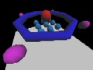

ステージ紹介
・岩
 | 標準的なステージ。最初に作ったお陰でシンプル。シンボルは中央の滑り台である。 |
・森
 | 森と言っても木は４本しかない。 |
・海
 | 水中でもすごせるどうぶつ達である。浮いている泡には乗ることができる。 |
・空
 | 白くて見難い。虹と雲は半透明になっている。豆の木には登ろう。 |
・屋敷
 | 室内での戦闘。屋敷から外の世界はどこまでもいける。 |
・？？？
 | 透明な壁や、隠し通路があって、謎なステージ。非常に広い。 |
・五角
| ５角形だらけ。毒の水が浮かび上がって来て非常に危険。 |
・クロス
| 非常に作りこまれたステージ。いい味出している。 |
・平野
| 一番広いステージ。移動がめんどくさそう。 |
・球体
|  | ジャンプ陣や、ワープポイント、エレベータがあり縦に長いステージ。浮遊ガスが大量にあるので空中戦になりがち。 |